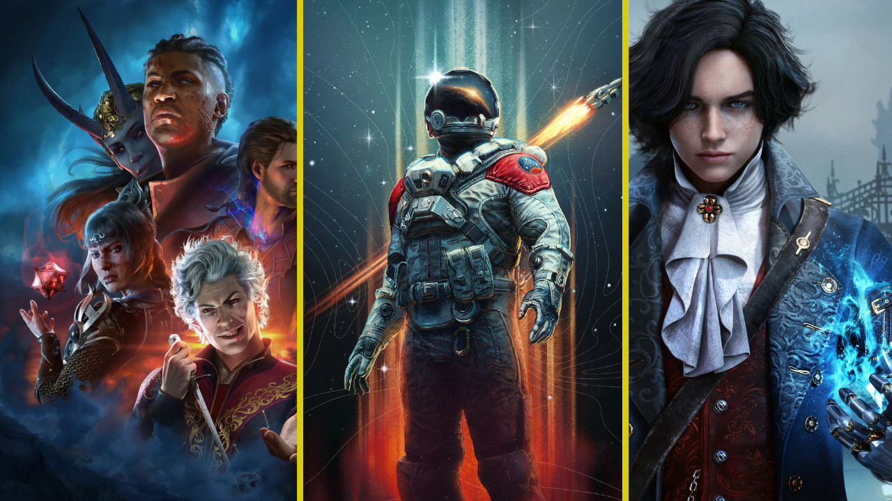

Data da Publicação: 04 de Setembro de 2023

Setembro traz uma empolgante leva de novos lançamentos no mundo dos
jogos, abrangendo diversos gêneros e estilos.
Descubra as últimas adições à cena dos games e fique por dentro das
experiências que estão conquistando os jogadores neste mês.
Data da Publicação: 03 de Setembro de 2023

Finalmente a Nintendo confirma que Super Mario Bros. Wonder terá
dublagem em pt-Br.
Já tava na hora né e cade o Zeldinha em português hein?